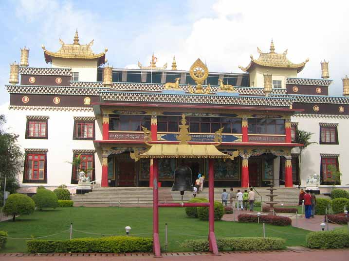

Travel is Life.Couldn't agree more?
we not just discuss travell,
We make it happens

At a distance of 34 km from Madikeri, 4.5 km from Kushalnagar, 7 km from Cauvery Nisargadhama & 87 km from Mysore, the Golden Temple or Namdroling Monastery is a beautiful Buddhist Monastery situated in Bylakuppe.
Bylakuppe is the second largest Tibetans settlement in India after Dharamshala. This Buddhist Monastery is one of the most popular tourist places to visit in Coorg.
Bylakuppe is a Tibetan refugee settlement area established by Lugsum Samdupling in 1961 and Dickyi Larsoe in 1969 and is situated to the west of Mysore district close to Bangalore - Coorg route.
The main tourist attraction here is the magnificent Namdroling Monastery. Popularly called as Golden Temple, the Namdroling Monastery was established by Drubwang Padma Norbu Rinpoche in 1963.
This is the largest teaching center of Nyingmapa, a lineage of Tibetan Buddhism, in the world and is home to a sangha community of over 5000 monks and nuns.
The Golden Temple complex is huge and it houses 40 feet high gilded images of Guru Padmasambhava (also known as Guru Rinpoche), Buddha Sakyamuni and Amitayus.
The temple tower is highly ornate. The outer walls flanking the doorway are decorated with huge colorful murals. The doors, red in color, have huge gold knockers and a thick plaited rope with tassels hanging from it.
The walls are adorned with colourful paintings depicting gods and demons from Tibetan Buddhist mythology.
The monastery not only attracts large number of young Tibetans seeking enlightenment and education, but also draws large number of tourists from all over India and abroad.
Watching hundreds of Buddhist monks doing religious rituals and offering prayers loudly is an exciting sight.
This place is a calm and majestic sight, surrounded by its landscaped gardens. The town is a delight to visit during festivals such as the Tibetan New Year (Losar), which is celebrated with much fervor at the monastery. It is celebrated in February / March over a period of fifteen days. During that time, the monastery hosts traditional colourful lama dances and huge thangkas, a Tibetan silk painting with embroidery depicts Buddhist deity.
One can also visit nearby Sera Monastery which is modeled after the original Sera University in Tibet. Sera Monastery belongs to the Gelugpa sect of Buddhism and is the local seat of education. It is situated about 2 km from the main Namdroling Monastery. There are other equally beautiful smaller monasteries; the Sakya Monastery and the Tashi Lhunpo Monastery. Sakya Monastery is a double story structure on the way to the main monastery.
Tashi Lhunpo Monastery is one of the four great monasteries of central Tibet and the original seat of the Panchen Lama. This was re-established in Bylakuppe in 1972.
Timings: 9 AM - 6 PM, Prayer is at 1 PM and it is a wonderful experience to watch the prayer.